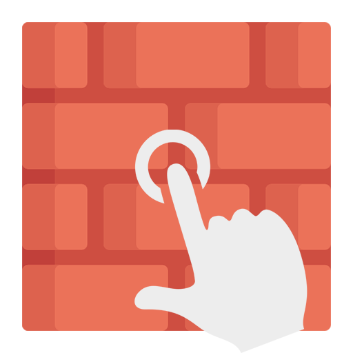

Preventing Digital Addiction
How to Reduce Digital Dependency
Here are some suggestions in order to help manage your screen time and prevent addiction...
1. Set Screen Time Limits
Use apps or built-in device settings to limit daily screen time.
A suggested app for Andriod would be WallHabit. While an app for iPhone would be Roots.
2. Create Tech-Free Zones
Avoid screens in places like the bedroom and during meals to encourage real-world interactions.
3. Engage in Offline Activities
Hobbies like sports, reading, and art help shift focus away from screens.

4. Practice Mindful Tech Use
Be conscious of why and when you're using digital devices. Avoid endless scrolling and prioritize purposeful use.
5. Seek Support
If the addiction still feels like too much, consider professional guidance or digital detox programs/videos.
Here are some YouTube videos that inform the audience about digital detox.